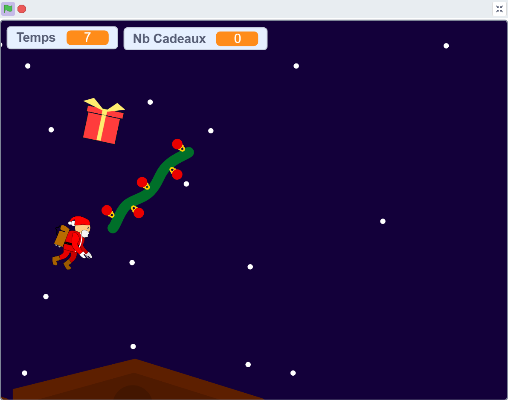
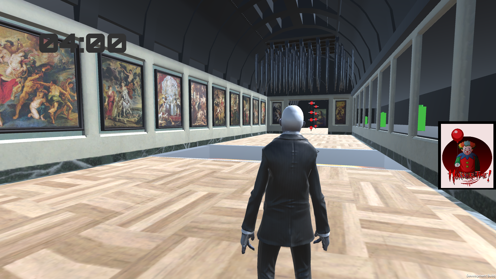
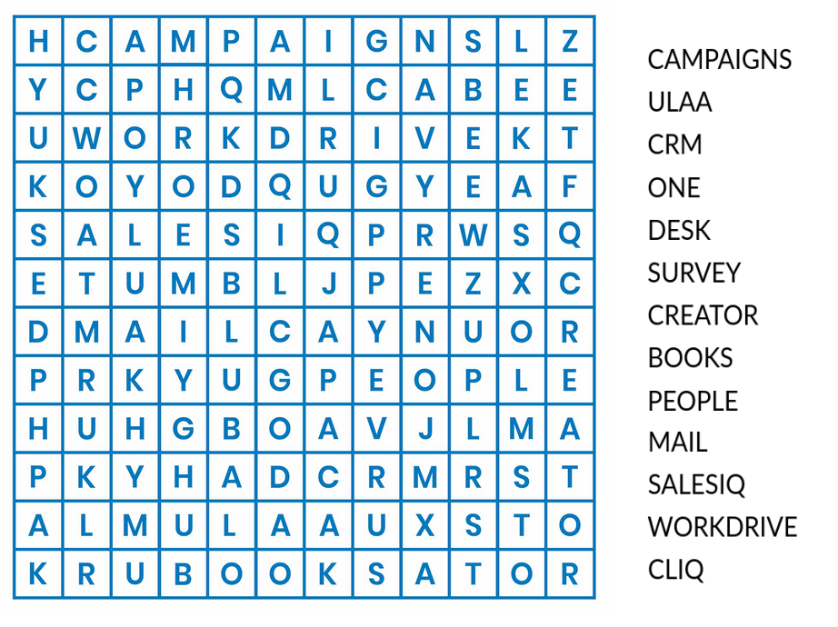

Eduard le Père Noël

Réalisé en binôme au lycée dans le cadre d'un exercice de programmation. Inspiré du jeu Jetpack Joyride, le joueur incarne Eduard le Père Noël qui doit récupérer des cadeaux tout en évitant les sapins.
J'ai contribué à la conception du gameplay, à la programmation des déplacements et collisions, ainsi qu'à la gestion du score. Ce projet m'a permis de développer mes compétences en logique algorithmique, en création de jeux 2D et en travail collaboratif.
Operation Mona Lisa

Jeu créé avec Unity, inspiré du concept Trapper contre Runner. Le Runner doit arriver à la fin du parcours pour récupérer la Mona Lisa en esquivant les pièges, tandis que le Trapper essaie de le ralentir en les activant.
Ce projet a été réalisé en groupe durant mon cursus à EPITA. J'ai pu améliorer mes compétences en C#, en conception de jeux et en gestion d'événements en temps réel.
Projets OCR

Ce projet est encore en cours de développement. L’objectif est de créer une intelligence artificielle capable de résoudre automatiquement un mot mêlé à partir d’une grille et d’une liste de mots.
Nous travaillons sur des algorithmes de recherche permettant de détecter les mots dans toutes les directions (horizontale, verticale et diagonale). Je participe à la conception de la logique de recherche et à l’optimisation du code.
Ce projet me permet de renforcer mes compétences en travail d’équipe, en algorithmique et en programmation en C.